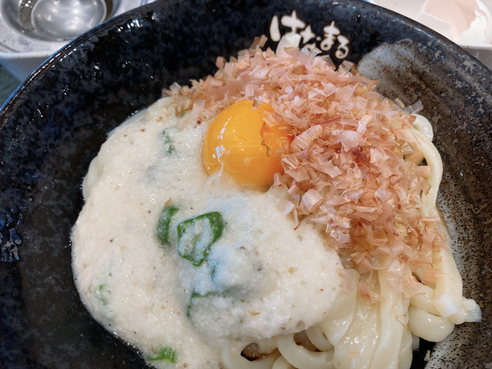
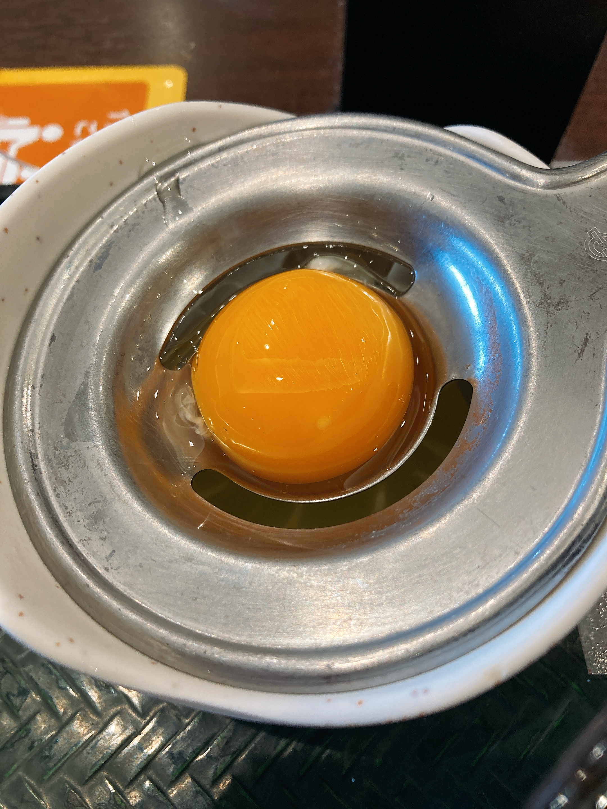

北関東を回る祭り
青春18きっぷとやらの残り1枠を友人から貰い受けました。せっかくなのでこの機会に、北関東WACCA行脚を片付けてしまおうと思います。
阪和線で鍛えられたのもあって、鈍行の端から端まで乗るという行為が元々結構好きだったり1。充電したiPadをお供に、ゆるくラフでも生やしながら大移動をしていきます。
千葉：柏駅、柏駅前ヤングボウル
9時開店と聞いて。柏駅近くにはここしかゲーセンがないようですね？5階のゲーセンに行こうとエスカレーターを登っていたら、4階の10時開店百均のせいでエスカレーターを登った直後がシャッターで行き止まりと化しており、泣く泣く登りのエスカレーターを逆行して降りて戻るという珍体験をしました。あれはすごい罠だった。
開幕調子悪すぎ草 pic.twitter.com/he5oyacrQU
— ₍₍⁽⁽🍳₎₎⁾⁾@1229関西 (@sal_pipr) September 5, 2021
6月に宮城県に行ったときから、行脚の1クレ目は「理論値達成済のGate One(exp)を自己ベストボーダーをかけて3回選曲」という独自ルールを設けています。簡単に言うと、一つでもMarvelousを逃すと即終了ってわけです。元は宮城で時間が無くて最速で1クレを終わらせるためだったのですが、時間のあるときは再理論値を狙うようにしています。にしても難しいねこの曲。4点押し長押しの始点がどうも上手くいかない。
ボウリングがメインのゲーセンの隅の筐体と筐体の間にひょこっと1台置いてあるWACCAでした。ビリヤードをエンジョイしているお兄さんたちの横で朝からしょたボイスを聞くだけ聞いてすぐ帰る謎のお姉さんになってしまった。
茨城：土浦駅、イオンモール土浦
柏駅から常磐線。本当は一つ手前の荒川沖のゲーセンに行こうと思っていたのですが、イオンモールの方が昼飯の人権があるだろうと思い。田舎民の勘が当たり、駅・イオンモール間のバスが存在したので帰り道は課金ショートカットをしました。220円で徒歩すっ飛ばしは安い。

昼は例のごとくとろろ。たまにはコシのある太いうどんが恋しくなりますね。

ｴｯﾁだ……w
なんて冗談はさておき。
初めて上手いこといった pic.twitter.com/RitgQDGttd
— ₍₍⁽⁽🍳₎₎⁾⁾@1229関西 (@sal_pipr) September 5, 2021
初めて行脚中再理論値チャレンジが成功しました。すごく明るいゲーセンで画面が見やすかったですね。後述しますがDUAL BREAKER鳥はここで出ました。音ゲーブースの入り口の、ファミリーの視界にも入るところに堂々とかのｸｿﾃﾞｶルーン君ポスターが貼ってあってお姉さん変な声出しかけました。やめてほしい。
ここからは再び常磐線に乗り、友部で水戸線に乗り換えます。水戸線、いい感じの人の少なさでラフが進んでたすかった。
栃木：小山駅、アピナ小山店
ここが今回の一番の徒歩ゾーン。駅から半時間歩きます。アピナ小山自体はとても環境の良さそうなゲーセンで、地元民が愛用しているんだろうなあって感じでした。駅から遠いので外様には優しくない。
この曲だめだわ() pic.twitter.com/2nVgwfr2P0
— ₍₍⁽⁽🍳₎₎⁾⁾@1229関西 (@sal_pipr) September 5, 2021
まあ再理論値は上手くいかないのがデフォルトなので。Megaton KillerのSSS+が出たりしました。本当は少しここで長居するつもりだったのですが、休憩がてら自販機で飲み物調達をしたところ炭酸飲料が吹き出して手袋が濡れるという壮絶なアクシデントが。当然手頃なところに百均があるわけもなく。時計を見ると、今から歩けば予定の一本前の電車に乗れるのでは……？と気付き、急遽ゲーセン→駅タイムアタックが発生しました。わかる人にはわかると思うんですけど、今日はなんとゲーセン用の靴を履いて来ていたので後半ダッシュでものの見事に足が死にました。おまけに小山駅東口改札から両毛線のホームが遠いというとんでもない罠でガチで死ぬかと思いました。これ逃したら40分待ちだったので恐ろしや。
群馬：高崎駅、群馬レジャーランド高崎駅東口店
両毛線の車内で何故か息を切らして駆け込み乗車してきた無様な姿を晒しつつ、最終目的地の高崎に向かいます。埼玉は7月の旅行の際に回収できてしまったので、ここが関東ラストというわけですね。
通常営業がんばってる素敵なゲだったけどあいにく pic.twitter.com/oDUTvnrIJ2
— ₍₍⁽⁽🍳₎₎⁾⁾@1229関西 (@sal_pipr) September 5, 2021
手袋がやられてしまっていたので最速モードで。家に帰ると替えがあるのがわかっていて買い足すのはちょっと……と思ってしまった。ここもいい感じのゲーセンでした。
夕飯は時間がなかったので、わざわざ撮りはしませんでしたがダブル肉厚ビーフを。あれさっとお腹いっぱいにできるのでコスパいい。
非行脚進捗 pic.twitter.com/hDwprjGf1X
— ₍₍⁽⁽🍳₎₎⁾⁾@1229関西 (@sal_pipr) September 5, 2021
非行脚進捗はこんな感じでした。やっぱりn県回ると一箇所の滞在時間が減ってゆったり遊ぶのが難しくなるわね。帰りの湘南新宿ラインは爆睡しました。足を虐めるのはやめましょう。
撮り逃しましたが「関東制覇！」称号を貰いました。地域制覇称号あるの知らなかった。次の帰省で関西制覇はまあなんとかなるとして、取り逃した山形や甲信越をなんとかするのが次の課題と行ったところ。そんなに真面目に行脚する気今までなかったのですが、おおお組旅行のおかげで意外となんとかなりそうなので、気ままに頑張っていくとしましょう。
-
中学生の頃に父と18券紀伊半島一周旅行をやったことがあります。和歌山県民からしてもやはり三重は遠い。そういや紀伊長島に何か忘れ物をした記憶が。 ↩︎